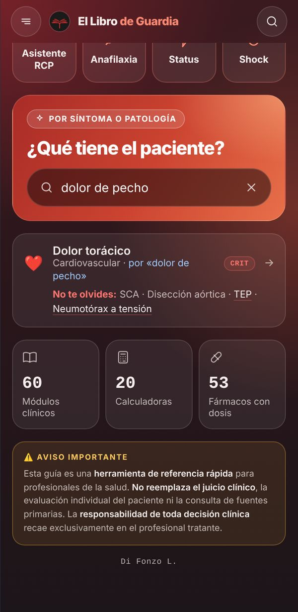
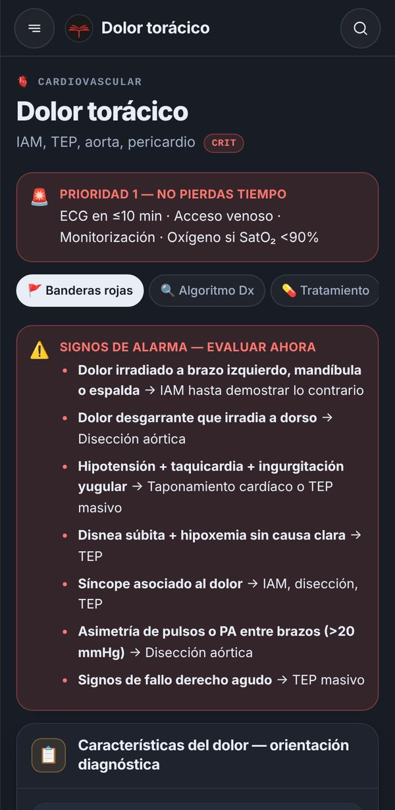
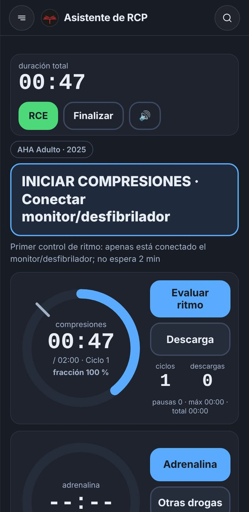
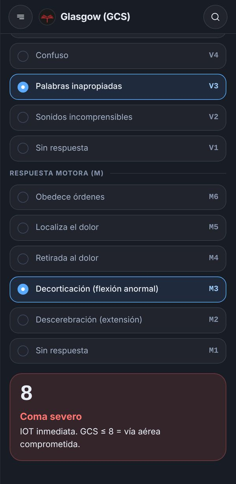

10:15 Entra un dolor de pecho
Escribís el síntoma.
El buscador te abre el módulo y te recuerda lo que no se te puede pasar: SCA, disección aórtica, TEP, neumotórax a tensión.

08:00 Empieza la guardia
El Libro de Guardia es una guía clínica para resolver rápido lo que entra por la puerta. En tu teléfono, también sin señal.
08:40 Primer paciente
El paciente ya está adelante tuyo y no hay tiempo de abrir un libro. El Libro de Guardia te lleva del síntoma a la conducta: qué descartar primero, qué pedir, qué indicar y a qué dosis.
10:15 Entra un dolor de pecho
El buscador te abre el módulo y te recuerda lo que no se te puede pasar: SCA, disección aórtica, TEP, neumotórax a tensión.

14:40 La guardia está llena
Cada módulo va al grano: banderas rojas, algoritmo diagnóstico y tratamiento, separados en pestañas.

03:20 Paro en la cama 4
El asistente de RCP cronometra los ciclos de dos minutos, cuenta las descargas y lleva el reloj de la adrenalina. Sigue AHA 2025.

05:05 Un TEC que no abre los ojos
Marcás lo que ves y la calculadora te da el puntaje y qué significa. Glasgow, NIHSS, NEWS2, Wells y más.

05:40 Neumonía en la cama 9
Esta es la CURB-65 de la app. Tocá los criterios que tiene el paciente.
06:10 Y sigue entrando gente
Algunos de los módulos: dolor torácico, ACV, sepsis, anafilaxia, shock, politrauma, síncope, crisis asmática, EPOC, neumonía, convulsiones, hemorragia digestiva, pancreatitis, cólico renal, hiperkalemia, crisis hipertensiva, hipoglucemia, meningitis, intoxicaciones, monóxido de carbono, vértigo y escroto agudo.
06:25 Una picadura de abeja en el box 2
Tocá un módulo. Es el contenido de la app, tal cual lo vas a leer en la guardia.
Fuentes: criterios diagnósticos según World Allergy Organization Anaphylaxis Guidance 2020 (Cardona et al., World Allergy Organ J 2020). Revisión: 2026-11.
| Letra | Causa | Clave diagnóstica |
|---|---|---|
| V | Vascular (ACV, HSA, trombosis venosa) | TC urgente |
| I | Infeccioso (meningitis, encefalitis) | Fiebre + rigidez de nuca |
| T | Traumatismo craneoencefálico | Historia de trauma |
| A | Autoinmune / Metabólico | Ionograma: Na⁺, Ca²⁺, glucosa, Mg²⁺ |
| M | Masas / Metástasis | Oncológico, TC con contraste |
| I | Isquemia | ACV isquémico focal |
| N | Neonatal / Epilepsia conocida | Nivel de fármacos antiepilépticos |
| S | Sustancias / Síndrome de abstinencia | Alcohol, benzodiacepinas, cocaína |
06:50 Interconsulta en el subsuelo
Una vez que la abriste, queda guardada en el teléfono. Funciona sin señal y sin wifi.
07:30 ¿Y esto de dónde sale?
Los módulos se arman sobre guías vigentes, argentinas e internacionales. Estas son algunas.
El Libro de Guardia es una herramienta de referencia rápida para profesionales de la salud. No reemplaza el juicio clínico, la evaluación de cada paciente ni la consulta de las fuentes primarias.
08:00 Termina la guardia
Para instalarla, abrila en Safari o en Chrome. En iPhone: Compartir y «Agregar a inicio». En Android: menú ⋮ e «Instalar app».